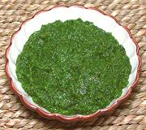

|
Caribbean Green SeasoningTrinidad etc. | ||||
| Makes: Effort: Sched: DoAhead: |
2 cups ** 1-1/5 hr Yes |
An essential Caribbean seasoning - but there is simply no "right" recipe for this. It differs from island to island and from household to household. The recipe given here was compiled from a number of Trinidad sources, none agreeing with any other. | |||
|
|
5 5 6 6 1 1/4 1/3 1/3 1/2 1/2 2 opt |
oz oz cl c c c t T |
Shallots Onion Garlic Scallions Celery stick (1) Thyme Parsley Culantro (2) Chili Habanero (3) Salt Vinegar Other Herbs (4) |
Note: all herb measures are after chopping small and fairly firmly packed. Remove tough stems before chopping, but tender stem tips can be used. This recipe is very green - versions with a lot of onion will be less green. Commercially bottled versions will be much more liquid.
|